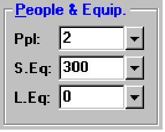

People and Equipment (Room Data, Default Room Data Windows) |
  
|
People and Equipment (Room Data, Default Room Data Windows) |
|

Ppl: This input item allows you to enter the number of people that will usually occupy the room during the maximum expected cooling load. The number of people can range from 0 to 9,999. If you enter a zero into this input item, the program will calculate the load for the room excluding people. Normally you should enter the maximum number of people you expect to occupy the room during the cooling season (since people are only used when calculating the cooling load). Do not specify people in rooms that are normally unoccupied when heat loads and solar loads are at their peak (normally from 1 to 6 pm). Normally the number of people in common rooms (such as the family room and dining room) is twice the number of bedrooms. The amount of cooling load per person is entered on the General Project Data window in the Sensible and Latent People Loads inputs.
S.Eq (Sensible Equipment Cooling Load): Click the dropdown help button beside this input for the Equipment Cooling Loads window. This entry is included to allow you to enter any additional sensible load caused by heat generating appliances or equipment in the room. It can range from 0 to 99,999 Btuh. Normally a value of 1200 Btuh is used in the kitchen. Other candidates for this entry are workshops that are in constant use or rooms with a high density of computers. Normally, rooms with lots of computers have an additional load of 6 Btuh per square foot. If there is no heat generating equipment in the room, you can leave this entry as zero. When specifying this value, remember it will only be used when calculating a sensible (dry bulb) cooling load for the room. Do not specify an additional sensible load if the heat generating equipment is not normally used in the summer. Also, be sure to reduce the load by some appropriate fraction to account for intermittent use of the equipment. And finally, sensible loads due to lighting are entered in the Lighting Watts field.
L.Eq (Latent Equipment Cooling Load): This entry allows you to enter additional latent cooling loads caused by equipment or appliances. Clothes washers, swimming pools, fountains, hair dryers, and steam operated equipment are some examples of equipment that can contribute an additional latent load to a room. This load can be up to 99,999 Btuh.